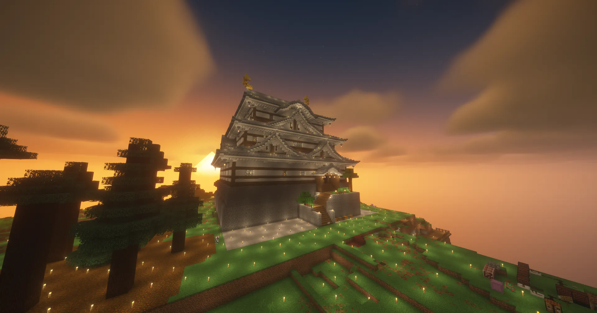

+1pt / 24h
MinePortal
Minecraftサーバー検索ポータル。投票すると +1ポイントもらえます。24時間ごとに1回投票できます。
投票する
Vote
以下のサイトに投票するごとにポイントがもらえます。
01How it works
上記の投票サイトから好きなページを開きます。
各サイトの投票ボタンを押して、VoiceMCに投票します。
投票が完了すると、各サイトで +1ポイントもらえます。
ゲーム内で/vote shopを開き、ポイントと交換します。
02Points
/vote shop でポイントと特典アイテムを交換できます。ポイントはゲーム内で確認できます。
03Vote shop
貯めたポイントはゲーム内の投票ショップで好きな特典と交換できます。
/vote total自分の合計投票数を確認する/vote next次に投票できるまでの待ち時間を確認する/vote topトップ投票者ランキングを表示する/vote streak連続投票記録を確認する詳しいコマンドはコマンドガイドをご覧ください。
注意事項